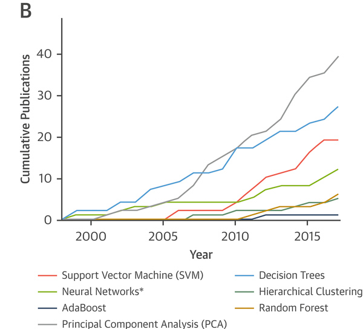
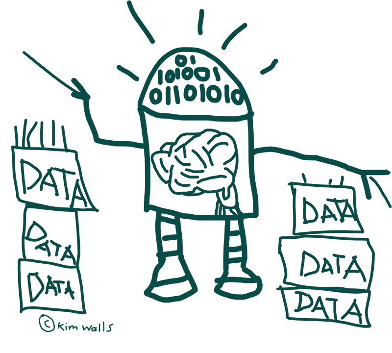

Machine Learning
What does it do?
Humans have a strong and innate ability to learn and adjust their behaviors based on the world around them. Computers on the other hand, usually rely on extremely specific inputs to achieve a desired outcome. This puts limitations on the scope of possible computer calculations, as this depth is limited by the input of humans. This brings us to machine learning.
The term ‘machine learning’ describes special form of algorithm that enables computers to change “the way they carry out tasks by learning from new data” critically, “without a human being needing to give instructions". (Cambridge Dictionary Online 2021)
The machine learning process allows computers to collect and analyze input data, then use this data to adjust its own programming to better solve certain problems. This can be applied in many forms, all with their benefits and drawbacks. Some variations being: supervised, semi-supervised, unsupervised, reinforcement learning. These different forms having varying amounts of guidance and input from humans, and the different models are better suited to different problems and data sets (Sarker 2021).
One class of machine learning algorithms which has seen a lot of attention and development recently is deep learning. Deep learning is defined by its many layers of virtual neurons that the data passes through, adding to its predictive accuracy. This often involves training from enormous quantities of data to refine its own algorithm with minimal human guidance. (Wikipedia 2021) Having exciting potential in fields that require accurate and complex prediction. For example, success has be demonstrated for physical modeling tasks such as aerodynamic modelling of aircraft and climate prediction (Kochkov et al. 2021). Algorithms can be designed to collect, review complex data points, and find links between them. Enabling this gradual improvement process that would be otherwise impractically complicated for a human to do.
Machine learning is being used to help bridge the bottleneck of human computer interface. Through great leaps in natural language processing, movement, and gesture recognition. Another significant impact in this area is the use of biometric data for secure identification through fingerprint and facial recognition.
Deep learning algorithms are also being used to effectively increase computing power by learning to make predictive calculations, making them far more efficient or able to run on less powerful devices. A currently available consumer example of this is NVIDIA’s DLSS or “deep learning super sampling” technology which uses deep learning on supercomputers to provide a blueprint for intelligent real-time up sampling which provides higher fidelity visuals with a significantly smaller performance cost. (Nvidia. 2021) These types of algorithmic deep learning models are currently being used to enable the real-time processing power and complex decision-making calculations required for the future of autonomous car driving systems. (Suriya Prasath et al. 2020)
What Does it Do?
Looking to the future, machine learning has the potential to assist any task that has use for smarter or faster handling of data. Scientific fields such as environmental sciences, medicine, mathematics, and physics just to name a few. To best observe the depth of effect machine learning will have we can look in depth at one of these.
The standard practices and measurements used in medical practice provide a good basis for implementation of improved diagnostic and prognosis methods with the use of machine learning for cutting edge imaging and data point analysis. This also has the benefit of reducing human error in the process as well as simple better informing the doctor. Learning algorithms also show enormous potential in the management of contagious disease and has been used to significant effect in the recent COVID-19 pandemic for modelling the patterns of outbreaks as well as patient risk factors. (Sarker 2021)
Figure 1 shows the cumulative growth of use of machine learning techniques in cardiac imaging in published literature from PubMed, a public collection of scientific health literature.

Figure 1, Machine Learning for Data-Driven Discovery, by Sengupta Partho P. & Shrestha Sirish, 2019 JACC: Cardiovascular Imaging, vol. 12, no. 4, pp. 691.
As these advances are made there will be an increasing number of our everyday electronic devices enhanced by machine learning algorithms. This could range from more accurate weather predictions to driverless cars becoming an everyday normality, to the significant reduction diagnosis errors from doctors. (Komura & Ishikawa 2019) Smarter planning decisions and a greater awareness of future impacts of current planning policies could have a positive impact on things like civil infrastructure planning. (Zhang et al. 2018)
Many of these benefits will be closely interwoven or seamless extensions of the direction current technology is headed. Just as with any other emerging tech of this scale these advances will not only accelerate progress but enable new fields to emerge that would not have been possible without. This will create a lot of new specialty IT jobs within the machine learning space as the field grows into many more mainstream fields.
How will this affect you?
For me, this technology will be an area I pay close attention to. As its applications are practical and wide reaching. I expect machine learning technologies to grow significantly from their already substantial impact and work their way into the everyday vocabulary of a sizable proportion of IT. I look forward to the potential uses within art and other creative mediums, with emerging collaborations between human and algorithm to fuel new creative ideas. The interaction between human tastes in abstract patterns and machine algorithms is something I think shows a lot of creative potential. (Vandor et al. 2020)
To the broader public I think that many of the advances of machine learning will be somewhat invisible to the end user. Much like cloud computing, the benefit is that the computer and networks do more of the work, so the users need not be aware of what is going on behind the scenes. More ‘magic’ will seem to happen behind the scenes as these practices get put into place. If things continue to trend the way they are headed, the difficulties of operating technology and the barriers to entry could be lessened through improved and simplified inputs such as voice, gestures and tactile feedback methods of which machine learning will play a critical role in interpreting this array of complex inputs. Making for a more democratized future of technology.
The health profession could very soon benefit in the form of earlier diagnoses and accurate, more bias free diagnosis from a complex combination of data fields. At the same time, we need to be wary of the ethical and security implications brought to light by the rise of large advertising companies who at present are the greatest beneficiaries of learning algorithms. Who as a result have a lot of influence on the future of the technology.
Author: Kim Walls
 Artists depiction of hungry and ravenous machine learning robot